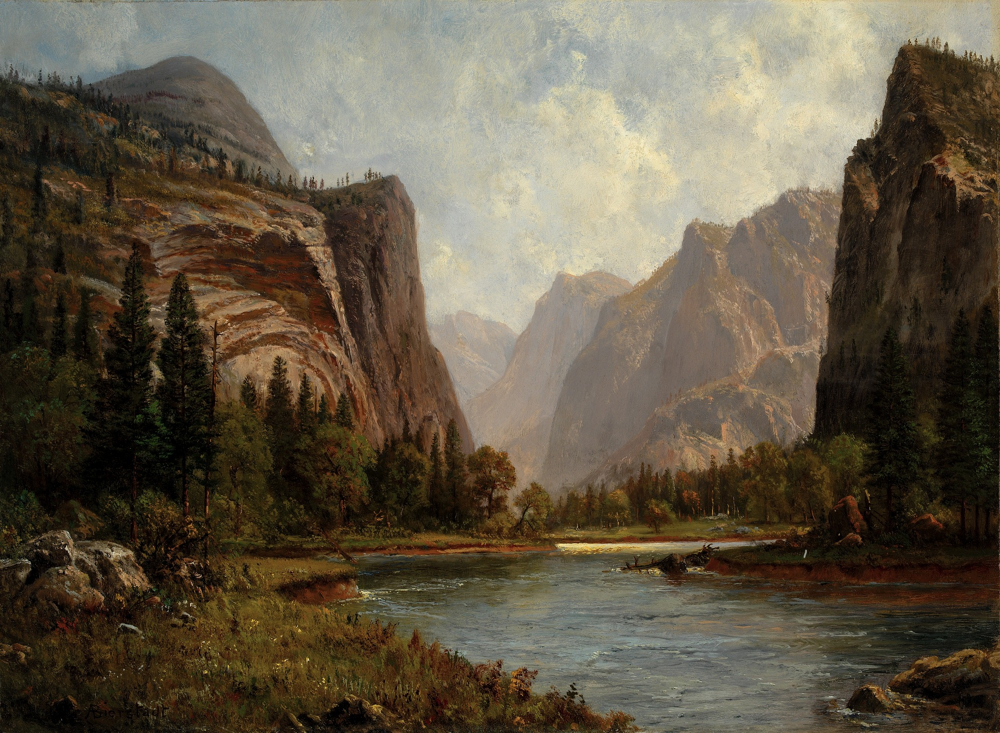
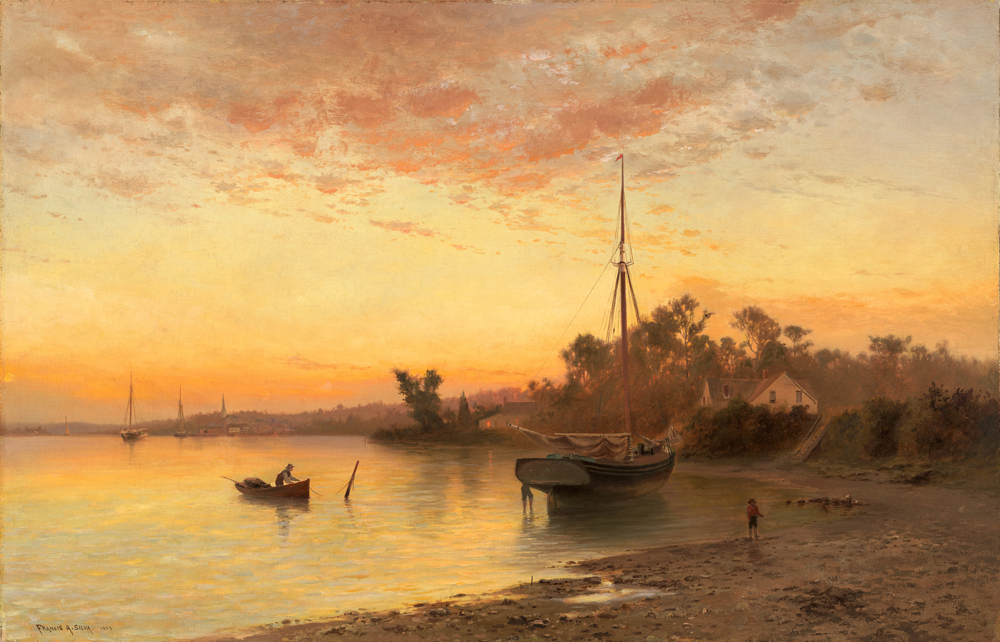
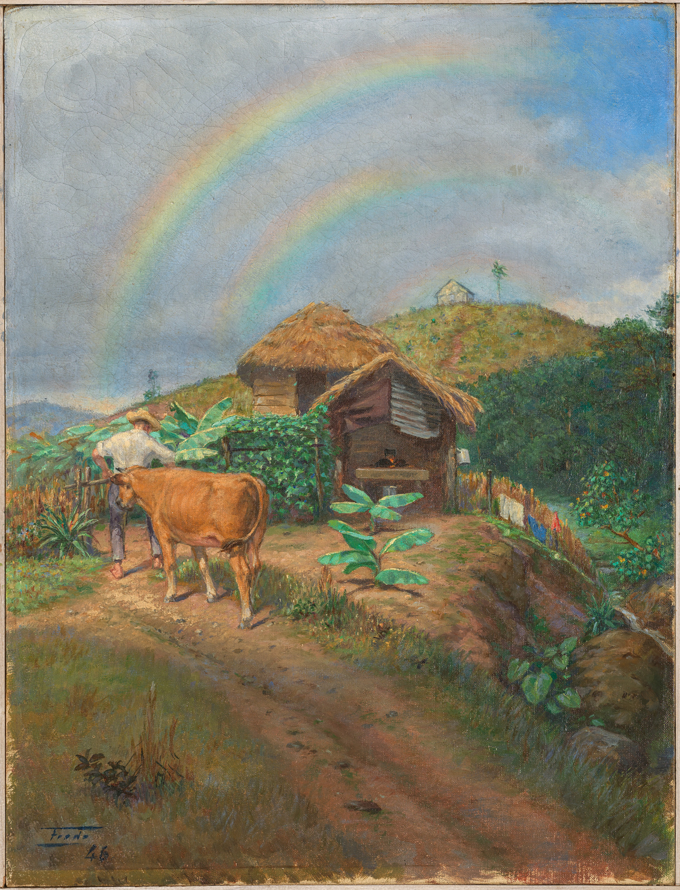
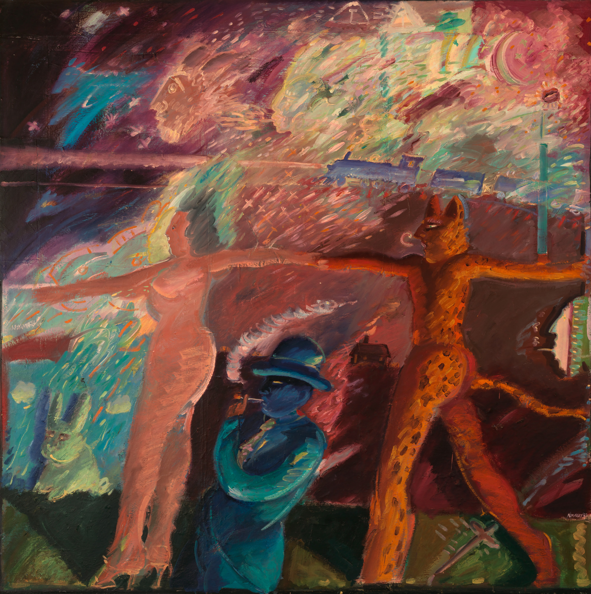
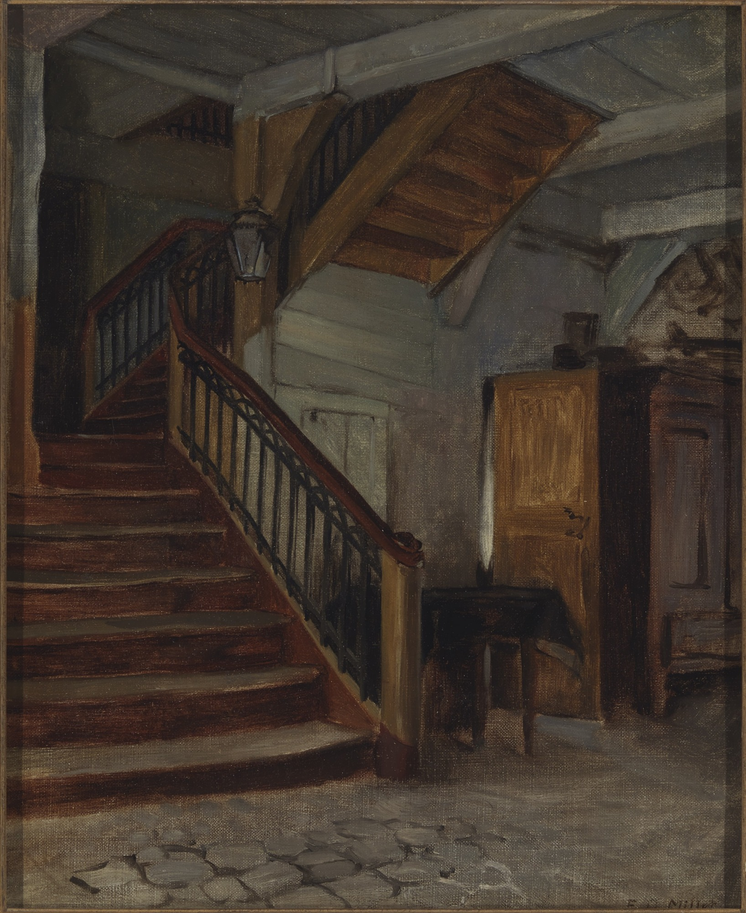

Albert Bierstadt, Gates of the Yosemite, ca. 1882, oil on paper mounted on canvas, approx. 14 x 20 in. (35.6 x 50.8 cm),
Smithsonian American Art Museum, Bequest of Marvin J. and Shirley F. Sonosky in memory of Harryette Cohn, 2006.1.1
src.

Back to the Table of Contents
Francis A. Silva, By the Seaside, New Jersey Shore, 1883, oil on canvas, 26 1/8 × 40 1/4 in. (66.4 × 102.2 cm),
Smithsonian American Art Museum, Gift of Walter and Lucille Rubin, 2022.58
src.

Back to the Table of Contents
Ramón Frade, Paisaje Campestre, 1946, oil on canvas, 17 in. × 12 3/4 in. (43.2 × 32.4 cm),
Smithsonian American Art Museum, Gift of Rafael and Maria Garces in honor of Ubaldo and Ines Soto, 2021.90
src.

Back to the Table of Contents
Carlos Almaraz, Europe and the Jaguar, 1982, oil on canvas, unframed: 72 × 72 in. (182.9 × 182.9 cm),
Smithsonian American Art Museum, Gift from the Trustees of the Corcoran Gallery of Art (Gift of The Friends of the Corcoran), 2020.20.7
src.

Back to the Table of Contents
Francis Davis Millet, Room Interior with Winding Staircase, n.d., oil on board, 14 1/8 x 11 3/8 in. (35.9 x 28.8 cm),
Smithsonian American Art Museum, Gift of the James F. Dicke Family, 2012.14
FUN FACT: While on business for the American Academy in Rome, Millet died en route to the United States in the sinking of the Titanic, in 1912.
src.

Back to the Table of Contents